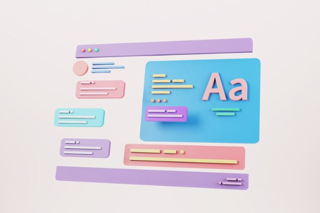
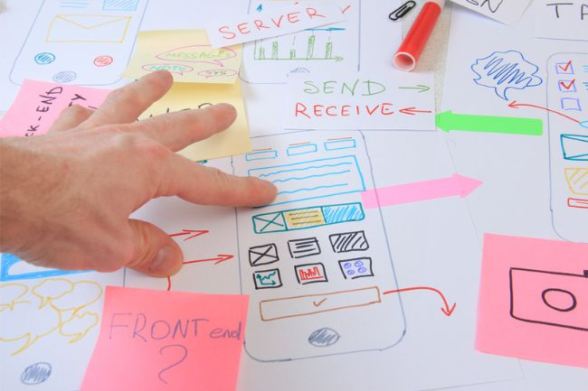

<div class="load-data">
  <div class="popup-main-content">
    <div class="container">
      <div class="blog-details">
        <div class="row">
          <div class="col-md-12">
            <div class="blog-info">
              <div class="tag mt-0">
                <span>02/Feb/2022 - Succinct clarification </span>
              </div>
              <h4 class="blog-details-title">
                Why UX is
                                  so much important in web/app design? 
              </h4>
            </div>
          </div>
          <br class="col-lg-12">
            <p class="mt-30">
              You see, when people visit a website or use an app, they want it to be easy to use, right? They don't want to get lost in a maze of confusing buttons or be frustrated by slow load times. That's where UX comes in! The goal of UX is to make sure that your website or app is enjoyable and easy to use for your users.
            </p>
            <p class="mt-30">
              Think of it like this - when you go to a fancy restaurant, you want the food to be delicious AND look good on the plate, right? That's because the presentation is just as important as the taste. The same goes for web and app design - the presentation (that's the UX) is just as important as the content (that's the text, images, and features).
            </p>
           
            <p class="mt-30"></p>
            <p class="mt-30"></p>
            <div class="row">
              <div class="col-md-6">
                
              </div>
              <div class="col-md-6">
                
              </div>
            </div>
            <div class="blockquote">
              <p>
                “ Great UX design means happy users, increased engagement, and a memorable brand experience. Let's work together to create a website or app that not only looks great, but feels great to use too!”
              </p>
            </div>
            <!-- /blockquote -->

            <h3 class="blog-details-sec-title" >
              TOP Technical and Primordial points about UX
            </h3>
            <p class="mt-30 blog-white">
              here are five more technical points that illustrate the importance of UX in web and app design:</p>
              
              <p class="mt-30">1 - UX design involves a lot of research, testing, and analysis to ensure that every element of the website or app is optimized for the user experience.</p>

              <p class="mt-30">2 - Good UX design can increase engagement, retention, and customer satisfaction.</p> 
              <p class="mt-30">3 - UX design takes into account the different devices and platforms that users may access the website or app on, such as desktops, laptops, tablets, and smartphones.</p> 
              <p class="mt-30">4 - UX design can help reduce customer support and training costs by making the website or app intuitive and easy to use.</p>
              <p class="mt-30">
                5 - UX design can improve accessibility for users with disabilities, such as those who use screen readers or have limited mobility.</p> <p class="mt-30 blog-white" >But, at the end of the day, the most important thing about UX design is that it helps meet the needs of your users. Here are five primordial points to keep in mind:</p>  <p class="mt-30">1 - UX design puts the user first and foremost, ensuring that the website or app is designed around their needs and preferences. </p> <p class="mt-30"> 2 -UX design can help your business stand out from the competition by providing a unique and enjoyable user experience.</p>
            </p>
            <p class="mt-30">
              3 - UX design can improve brand loyalty and customer retention by creating a positive emotional connection between the user and the website or app.
            </p>
            <p class="mt-30">
              4 - UX design can help users accomplish their goals quickly and efficiently, reducing frustration and increasing satisfaction.
            </p>
            
            
            <p class="mt-30">
              5 - UX design is an ongoing process, with continuous testing and improvement to ensure that the user experience remains enjoyable and effective.
          
            </p>
            <p class="mt-30">
              Now, if you want to prepare for a project with me, the best thing you can do is tell me all about your users/customers. Who are they? What do they want to accomplish with your business? What problems are they trying to solve? The more we know about your users/customers, the better we can design the UX to meet their needs.
            </p>
            <p class="mt-30">Let's work together to create a website or app that not only looks good, but is also a joy to use! 📈</p>
          </div>

          <div class="col-md-12">
            <div class="divider"></div>
            <!-- /divider -->
          </div>

          <div class="col-md-12">
            <div class="blog-details-nav d-flex justify-content-between">
              <div>
                <a class="blog-link" href="blog-details-02.html"
                  >Web design & Web development 🤝
                  <small>PREVIOUS POST</small></a
                >
              </div>
              <div class="text-right">
                <a class="blog-link" href="#"
                  >Come back soon to see my next post
                  <small>NEXT POST</small></a
                >
              </div>
            </div>
            <!-- /portfolio-details-nav -->
          </div>
        </div>
      </div>
      <!-- /blog-details -->
    </div>
  </div>
</div>
